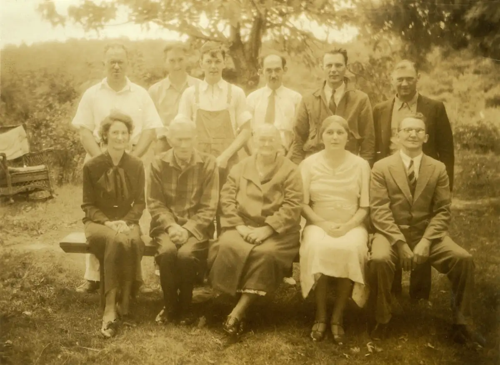

Home / Krehbiels / 012 Krehbiel Peter and Katie / kre012-00004
kre012-00004
← Return to 012 Krehbiel Peter and Katie
← kre012-00003a kre012-00005 →
Captioned by Dad: "Peter B. & Katie Krehbiel Family." Dad identified: Back Row, Left to Right: Elmer, Karl, Paul, Milton, Walter, Jake. Front Row, Left to Right: Esther, Peter, Katie, Emma, Ted. Perhaps taken shortly before Peter's death in 1937.

Actual size: 4.48" × 3.27" · Scanned at: 600 dpi · 5.27 MP (2688×1962) · Image date: 6 Jun 2005 · Comment date: 6 Jun 2005
Copyright © 2005–2026 Thomas Krehbiel. Images are freely distributable for personal use. For more information about these images contact Thomas Krehbiel (tkrehbiel@gmail.com).
Photos were scanned at either 300dpi or 600dpi, depending on the quality of the photograph. Slides were scanned at 1800dpi. Documents were scanned at 100dpi or 150dpi. Photoshop enhancements: most images have had their contrast improved. Some color photos were corrected to restore color balance. Some blurry images were mildly sharpened. Occasionally dust, scratches, and blemishes were removed digitally.
{kind=link}